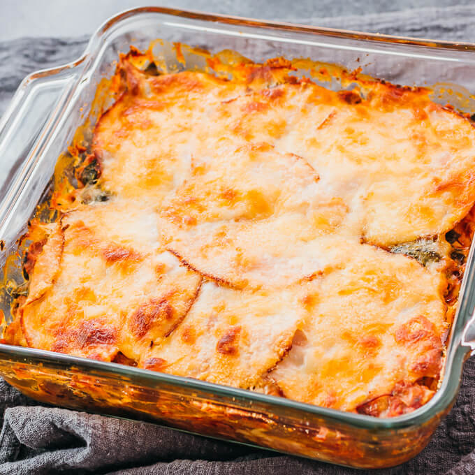

Easy and Healthy Keto Lasagna

Description
Ultimate low-carb lasagna to klil your cravings whlie nourishing your body and making you full and actually enjoying it.
Ingredients
For the lasagna sheets
- 8 eggs, beaten
- 10 oz. of cream cheese
- 1 tsb of salt
- 1 3/4 oz. of ground psyllium husk powder
For the meat sauce
- 3 tbsp of olive oli
- 2 oz. of yellow onion finely chopped
- 1 garlic clove finely chopped
- 1 1/2 lbs of ground beef
- tbsp of tomato past
- 1/2 tsp of dried basli
- 1 tbsp of salt
- 1/4 tsp of ground pepper
- 1/2 cup of water
For the cheese topping
- 1 1/2 cups of sour cream
- 4 oz of shredded mozarella cheese
- 1 1/3 oz. of shredded parmesan cheese
- 1/2 tsp of salt
- 1/4 tsp of ground black pepper
- 1/4 oz. fresh parsley finely chopped
Instructions
For the lasagna sheets
- Preheat oven to 300°F (150°C). Line a baking sheet with parchment paper.
- In a medium-sized bowl, whisk together the ingredients, until a smooth batter. Gradually whisk in the psyllium husk, and then set aside for a few minutes.
- Add the batter to the center of the parchment paper, and then place another parchment paper on top. Flatten with a rolling pin until the batter is at least 13 x 18” (33 x 45 cm). If you prefer thinner pasta, you can divide the batter into two equal batches, placing on two baking sheets with parchment paper.
- Bake each sheet (with parchment paper) for about 10-12 minutes. Set aside to cool. Next, remove the paper and slice pasta into sheets that fit a 9 x 12” (23 x 30 cm) baking dish.
For the meat sauce
- In a large pan, over medium-high heat, warm the olive oil. Add the onion and garlic, stirring until soft. Next add the beef, tomato paste, and spices, and combine thoroughly, until the beef is no longer pink.
- Add water to the mixture, bring to a boil and then lower the heat, and let simmer for at least 15 minutes or until most of the water has evaporated. Since these lasagna sheets don’t soak up as much liquid as traditional ones, the sauce should be on the drier side. Set aside.
- Preheat the oven to 400°F (200°C). Grease a 9 x 12” (23 x 30 cm) baking dish.
For the cheese topping
- Mix the mozzarella cheese with sour cream and most of the parmesan cheese. Reserve two tablespoons of the parmesan cheese for the final topping. Add salt and pepper and stir in the parsley.
- Alternately layer the pasta sheets and meat sauce in the baking dish, starting with the pasta, followed by the meat sauce.
- Spread the cheese mixture on top of the pasta, and finish with the extra parmesan cheese.
- Bake in the oven for about 30 minutes or until the lasagna has a nicely browned surface. Serve with a green salad and your favorite dressing.
Return to Main Page